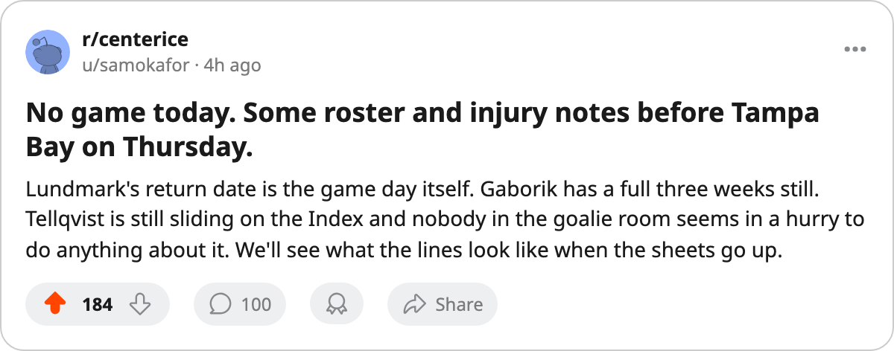

Injury Desk: Lundmark returns Thursday, Gaborik has 24 more days, and Tampa Bay is 3-9 on the road
No game today. Two days to sort out the shooting and the bottom 6 before the Lightning visit
 Sam OkaforLeafs beat reporter · Queen City Telegram
Sam OkaforLeafs beat reporter · Queen City Telegram
The piece
There is no game today. The  Toronto Maple Leafs have until Thursday to sort out what went wrong against
Toronto Maple Leafs have until Thursday to sort out what went wrong against  Buffalo Sabres on Tuesday night, when they fired 32 shots and scored 1 goal in a 5-1 home loss.
Buffalo Sabres on Tuesday night, when they fired 32 shots and scored 1 goal in a 5-1 home loss.  Tampa Bay Lightning arrives at Maple Leaf Gardens on December 3 at 3-9 on the road.
Tampa Bay Lightning arrives at Maple Leaf Gardens on December 3 at 3-9 on the road.
 Jamie Lundmark81 is back. The injury sheet lists his return date as December 3, the same day Tampa Bay visits. Lundmark has 2 points in 16 games and 5.4 minutes a night. He carried a third-line wing slot before the leg knocked him out. His return fills the bottom 6 but does not reshape the top lines.
Jamie Lundmark81 is back. The injury sheet lists his return date as December 3, the same day Tampa Bay visits. Lundmark has 2 points in 16 games and 5.4 minutes a night. He carried a third-line wing slot before the leg knocked him out. His return fills the bottom 6 but does not reshape the top lines.
 Marian Gaborik99 remains out until December 25 with the leg. The Bureau's Development Index carries him at +11, the highest single form reading on the Toronto roster. He has 8 points in 17 games and his 99 overall is the best number on the sheet. He has not skated since the injury struck in mid-November and there are 24 days left on the shelf.
Marian Gaborik99 remains out until December 25 with the leg. The Bureau's Development Index carries him at +11, the highest single form reading on the Toronto roster. He has 8 points in 17 games and his 99 overall is the best number on the sheet. He has not skated since the injury struck in mid-November and there are 24 days left on the shelf.
The Index has 5 Toronto players on the riser list this edition: Gaborik at +11,  Stanislav Chistov87 at +8,
Stanislav Chistov87 at +8,  Rostislav Klesla87 at +8, Lundmark at +8, and
Rostislav Klesla87 at +8, Lundmark at +8, and  Rick Nash85 at +7. The faller list has one Toronto name: Mikael Tellqvist73 at -5, continuing the slide from November 27 when he sat 5 spots below his base. The goaltending rotation remains Luongo, Maxime Ouellet86 and Tellqvist with 8 starts each through 24 games.
Rick Nash85 at +7. The faller list has one Toronto name: Mikael Tellqvist73 at -5, continuing the slide from November 27 when he sat 5 spots below his base. The goaltending rotation remains Luongo, Maxime Ouellet86 and Tellqvist with 8 starts each through 24 games.
On the Tampa Bay side,  Alexander Svitov73 is out until December 7 with the elbow. The Lightning sit at 27 points in 23 games, 5th in the Southeast. Their 3-9 road record is the worst in the division.
Alexander Svitov73 is out until December 7 with the elbow. The Lightning sit at 27 points in 23 games, 5th in the Southeast. Their 3-9 road record is the worst in the division.
The one-game series
The season series is one meeting: Toronto Maple Leafs won 3-2 in overtime earlier this fall. Thursday is the second of four scheduled meetings. The Lightning are coming off a 4-1 home win over  Vancouver Canucks on November 29 and a loss at
Vancouver Canucks on November 29 and a loss at  New York Rangers today that is not yet on the sheet.
New York Rangers today that is not yet on the sheet.
The Leafs fired 32 shots for 1 goal against a team that scored 61 all season. They are 11-5 at home. The road team visiting is 3-9. If those two numbers meet on the ice and the home team wins, the 7-point lead over  Boston Bruins holds. Everything else can wait for the weekend.
Boston Bruins holds. Everything else can wait for the weekend.
